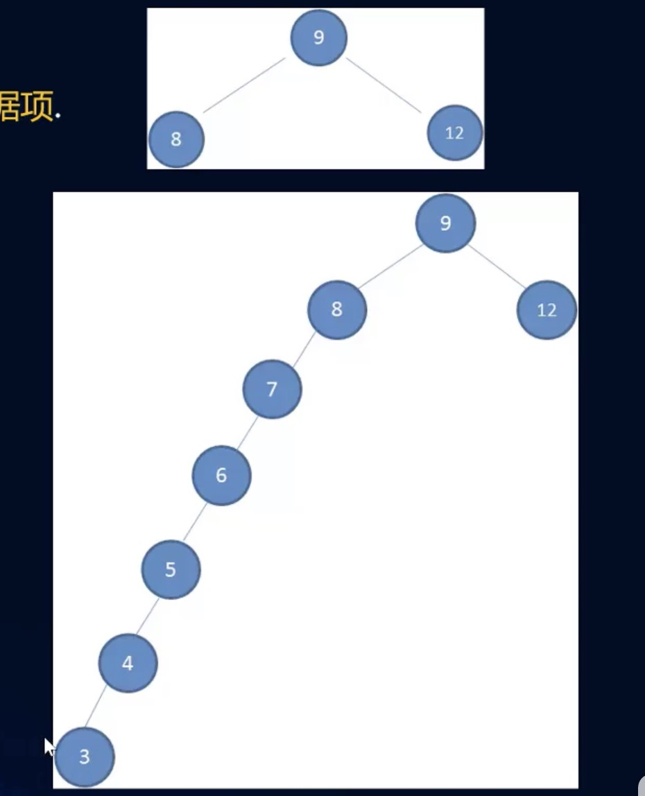

一、二叉搜索树作为数据存储的结构有重要的优势O(logn)
1、可以快速地找到关键字的数据项，并可以快速的插入和删除数据项。
二、二叉树的缺陷：
1、如果插入的数据是
有序的数据，比如下面的情况：
- 有一棵初始化为9 8 12的二叉树
- 插入下面的数据：7 6 5 4 3

这样会导致数据分布不均，树的高度变高，查询效率底下
三、非平衡树
- 比较好的二叉搜索树数据应该是左右分布均匀的
- 但是插入连续数据后，分布的不均匀，我们称这种树为非平衡树
- 对于一棵平衡二叉树来说，插入/查找等操作的效率是O(logN)
- 对于一棵非平衡二叉树，相当于编写了一个链表，查找效率变成O(N)
四、树的平衡性
为了能以
较快的时间O(logN)来操作一颗树，我们需要
保证树总是平衡的
- 至少大部分是平衡的，那么时间复杂度也是接近O(logN)的
- 也就是说树中每个节点左边的子孙节点的个数，应该尽可能的等于右边的子孙节点的个数
- 常见的平衡树有哪些呢？
五、AVL树
- AVL树是最早的一种平衡树，它有些办法保持树的平衡（每个节点多存储了一个额外的数据）
- 因为AVL树是平衡的，所以时间复杂度也是O(logN)
- 但是，每次插入/删除操作相对于红黑树都不高，所以整体效率不如红黑树
- 目前使用较少了
六、红黑树
- 红黑树也通过一些特性来保持树的平衡
- 因为是平衡树，所以时间复杂度也是在O(logN)
- 另外插入/删除等操作，红黑树的性能要优于AVL树，所以现在的平衡树的应用基本都是红黑树